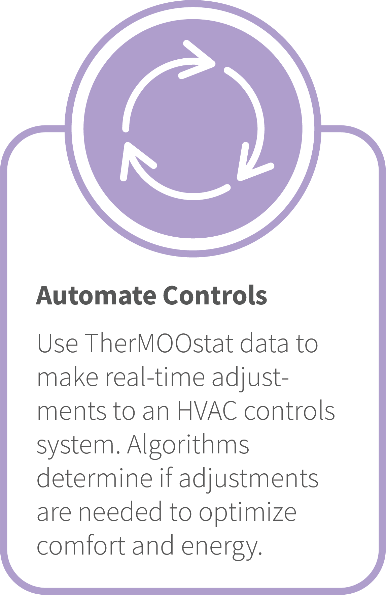
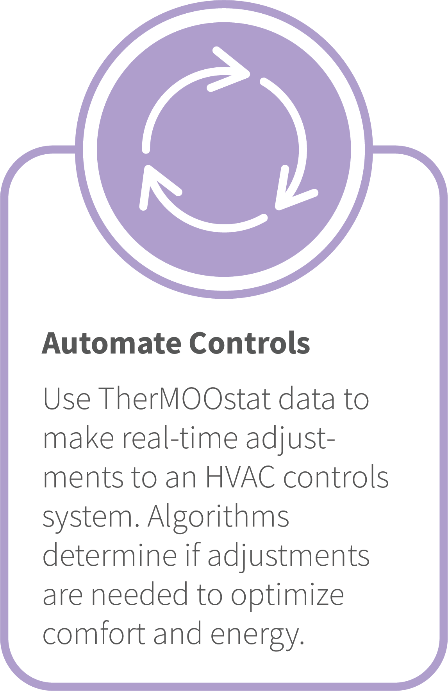

Energy Efficiency Initiatives
PTS data enables more proactive energy efficiency projects because it provides a communication channel with building occupants to ensure projects do not adversely affect them. At UC Davis, we use TherMOOstat to check in before, during, and/or after an energy efficiency initiative.
UCD Examples of Using PTS to Evaluate Efficiency Projects
An energy efficiency project in a laboratory building on campus began with a test to find any leaks between the hot and cold water systems. The chilled water was turned off for one week in January to pinpoint issues and/or leaks. TherMOOstat was advertised via flyers in the building during this time. In that week, we received 15 TherMOOstat votes: 7 hot, 5 warm, 2 perfect, and 1 chilly. TherMOOstat was the main point of contact for building occupants to reach out and give us feedback. Only two work orders were also submitted during this period by people who didn’t know about TherMOOstat.
A second example is a project called Small Workplace Air and Remote Monitoring (SWARM), which aims to increase smaller buildings' visibility and be a part of energy efficiency initiatives on campus. The project installs WiFi enabled thermostats in these smaller buildings, enabling Facilities to remotely see the temperature and program the thermostats. After the thermostats are installed, TherMOOstat is advertised to occupants via flyers in the buildings. Facilities uses TherMOOstat to continuously monitor SWARM buildings and to keep in touch with the occupants after the installation of the new thermostats.

 
